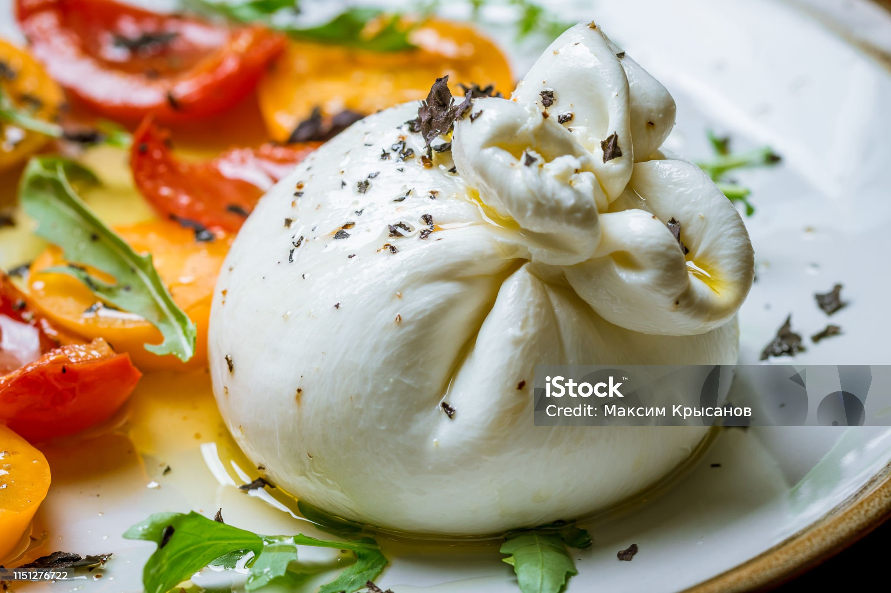

Burratinha
Home

This is a Burratinha
Creamy on the inside, delicate on the outside—burrata is cheese that dreams are made of. Just slice, drizzle, and devour!
Ingredients
- Burrata cheese
- Cherry tomatoes
- Fresh basil
- Olive oil
- Balsamic glaze (optional)
- Salt & pepper
- Crusty bread (for scooping!)
Steps
- Place burrata in the center of a plate.
- Slice cherry tomatoes and arrange them around the cheese.
- Drizzle with olive oil and balsamic glaze.
- Sprinkle with salt, pepper, and fresh basil.
- Serve with warm bread—and dive in!